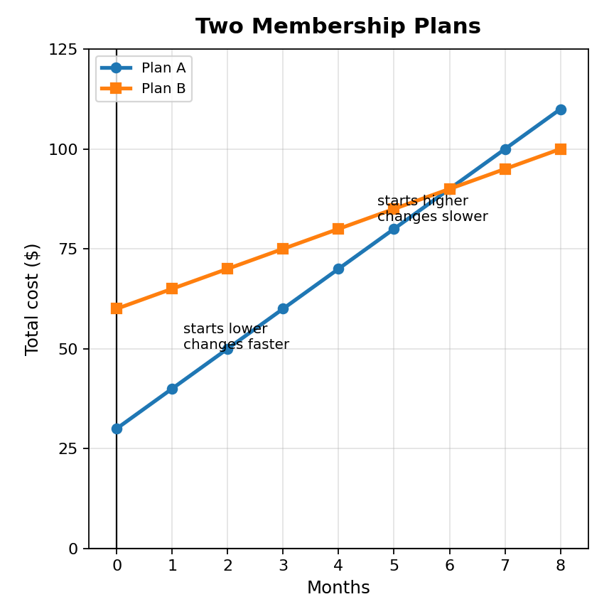
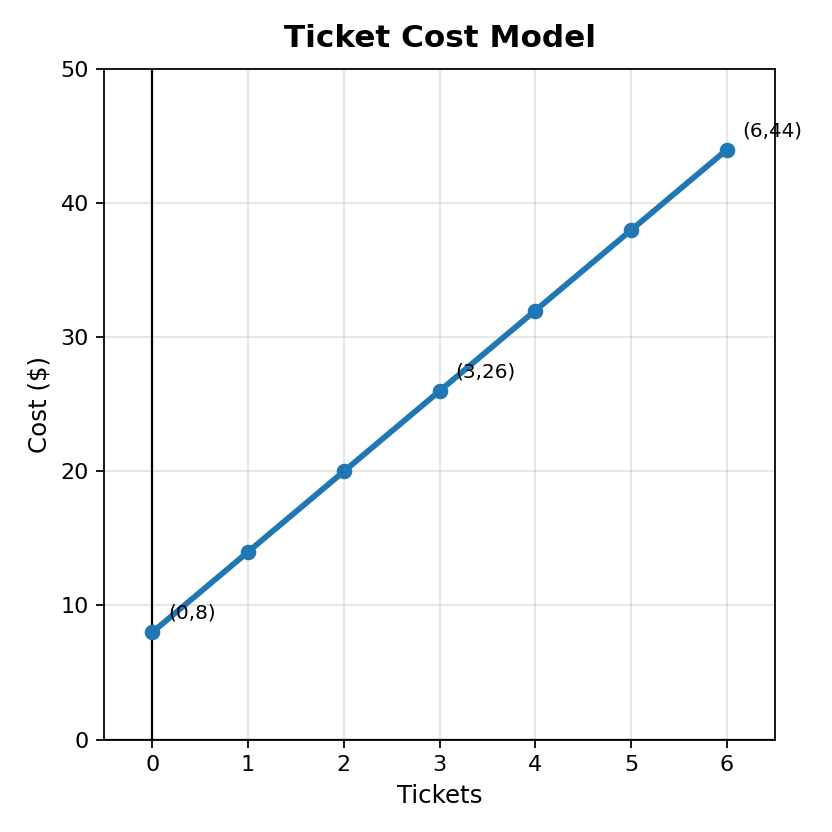

Mathematical idea: A model is useful when the equation, the solution, and the situation all make sense together.
Today we will write equations from situations, solve them, and explain what the solution means in context.
Students will write, solve, and interpret equations that model situations.
I can statements
This is a long-range preview for future lessons. Do not solve it today. Instead, annotate it individually. Circle anything familiar, underline symbols or directions that seem important, and write notes about what information you think will be needed later.
As you annotate, ask yourself: What decision is the equation helping someone make? What does the crossing point on the graph seem to represent? What information would you need before choosing a plan? How could a mathematically correct answer still need to be interpreted carefully?
Future Task
A community center is comparing two membership plans. Both plans charge a starting fee and a monthly cost, but the plans are built differently.
Starts with a lower fee but costs more each month.
$C=10m+30$
Starts with a higher fee but costs less each month.
$C=5m+60$

Directions
Read the introduction aloud with a partner or in a small group. As you read, annotate the text by highlighting important ideas, circling key vocabulary, and writing short notes about connections, questions, or predictions in the margins.
An equation can be more than a math sentence. It can be a model. A model uses math to represent something happening in a situation.
For example, if a ticket booth charges a starting fee and then adds the same amount for each ticket, an equation can show the total cost. The numbers in the equation have meaning. One number might show the starting cost. Another number might show how much the cost changes each time.
Solving an equation gives a value that makes the equation true. In a situation, that value should also answer a question. If the answer is $6$, we should know whether that means $6$ tickets, $6$ months, $6$ dollars, or something else.
A good model must be checked. The equation should match the story. The solution should be reasonable. The explanation should connect back to the original situation.
Stop and Discuss
When we write an equation from a situation, we first decide what the variable represents. Then we connect the numbers in the story to the parts of the equation.
Equation model: An equation that represents a situation and helps answer a question about that situation.
A taxi charges a starting fee of \$4 plus \$2 for each mile. Write an equation for the total cost after $m$ miles. Then explain what each part of the equation means.
A school dance charges \$6 to enter plus \$3 for each snack ticket. Write an equation for the total cost after $t$ snack tickets. Explain what the variable and each number mean.
Stop and Discuss
Solving gives the value that makes the equation true. Interpreting explains what that value means in the situation.
Modeling check: What does the variable represent? What operation is happening? What question does the solution answer?
A gym charges \$20 to join and \$15 each month. The total cost is \$80.
A club has \$18 already saved and earns \$6 for each car washed. The club wants \$60 total. Write and solve an equation, then explain the solution in context.
A graph shows the same model visually. The starting value appears where the graph begins at input $0$. The change shows how the graph rises or falls as the input increases.
The graph shows a ticket cost model.

A table shows a total cost of \$7 at $0$ items, \$12 at $1$ item, \$17 at $2$ items, and \$22 at $3$ items. Write an equation model and explain what the $7$ and the $5$ mean.
Stop and Discuss
After solving, we should ask whether the answer makes sense. Some contexts need whole numbers. Some answers may be too large, too small, or have the wrong unit for the situation.
A class needs \$50 for supplies. Each student contributes \$8. A student writes and solves $8s=50$ and gets $s=6.25$.
A group needs \$70 for a trip. Each fundraiser ticket earns \$12. Solve $12t=70$. Then explain why the exact solution may need to be adjusted in the real situation.
Stop and Discuss
Optional Reflection: Look back at the future task. Do not solve it yet.